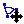
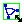

|
Edit Mode allows Nodes and Edges to be added, removed, moved, directed, curved or colored. |
 |
Move Mode allows the entire graph to be repositioned. |
 |
Rotate Mode allows the entire graph to be rotated around its center of gravity. |
 |
Resize Mode allows the entire graph to be resized or scaled. |